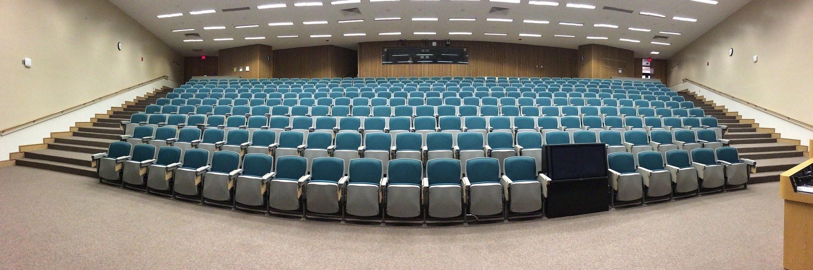

講演
プレゼンテーション用の画像
主な招待講演
- Strong lens modeling of clusters with JWST data
(2023/6/21, Strong Gravitational Lensing in the Era of Big Data, Otranto, Italy )
- Optical surveys of clusters of galaxies [pdf]
(2022/4/26, Galaxy Clusters 2022: Challenging Our Cosmological Perspectives, STScI, Baltimore, USA)
- 宇宙観測と素粒子物理 [pdf]
(2020/9/30, 高エネルギー研究者会議勉強会, オンライン)
- Gravitational waves in the inhomogeneous Universe [pdf]
(2020/1/4, Dark Odyssey 2020: Gravitational-Wave Probes of Dark Universe, Seoul National University, Seoul, South Korea)
- Gravitational waves in the inhomogeneous Universe [pdf]
(2019/9/3, Cosmological Frontiers in Fundamental Physics 2019, Perimeter Institute for Theoretical Physics, Waterloo, Canada)
- New directions in strong lensing [pdf]
(2019/8/23, CosmoCruise 2019: From the Early to the Late Universe, Venice, Italy)
- 重力レンズ天文学の進展 [pdf(謝辞なし)]
(2019/3/16, 日本天文学会2019年春季年会, 法政大学)
- Cluster mass distributions [pdf]
(2018/9/3, The Universe as a telescope: probing the cosmos at all scales with strong lensing, Milan, Italy)
- ダークマターの観測的制限 [pdf]
(2018/8/6, 素粒子物理学の進展2018, 京都大学)
- Gravitational lensing with Subaru Hyper Suprime-Cam survey [pdf]
(2018/6/11, Studying the Universe with GAlaxy suRveys Revealing the Unlimited in ShangHai, SJTU, Shanghai, China)
- Ultra high magnification microlensing [pdf]
(2018/2/16, PACIFIC 2018 symposium, Kiroro, Hokkaido)
- Clusters of galaxies in Subaru Hyper Suprime-Cam survey [pdf]
(2017/6/16, Galaxy Evolution Across Time, ENS, Paris, France)
- Clusters of galaxies in Subaru Hyper Suprime-Cam survey [pdf]
(2016/11/2, The 7th KIAS workshop on Cosmology and Structure Formation, KIAS, Seoul, South Korea)
- Gravitational wave standard sirens [pdf]
(2016/5/24, Astronomical Distance Determination in the Space Age, ISSI-BJ, Beijing, China)
- The image plane approach to cosmic telescopes [pdf]
(2015/8/4, The Frontier Fields: Transforming our Understanding of Cluster and Galaxy Evolution, Honolulu, USA)
- Scatter and bias in cluster mass estimates [pdf]
(2015/3/25, Astroparticle View of Galaxy Clusters, 広島大学)
- Gravitational lensing science with WISH [pdf]
(2013/12/3, WISH Science Workshop: ''Exploring the Darkness'', NAOJ)
- The shape of cluster-scale dark matter halos [pdf]
(2013/4/16, Cluster Lensing: Peering into the Past, Planning for the Future, STScI, Baltimore, USA)
- Halo Profiles from Lensing Observations of Clusters [pdf]
(2011/9/21, Cosmology with X-ray and Sunyaev-Zeldovich Effect Observations of Galaxy Clusters, Huntsville, USA)
- Quasar lensing as a cosmological probe [pdf]
(2010/10/2, String Theory and Cosmology, Daejeon, South Korea)
TOP